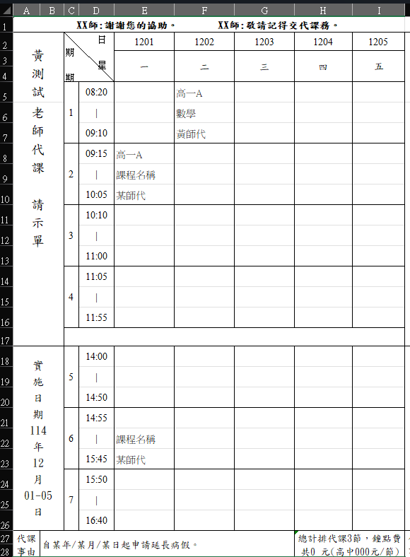
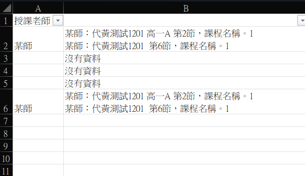
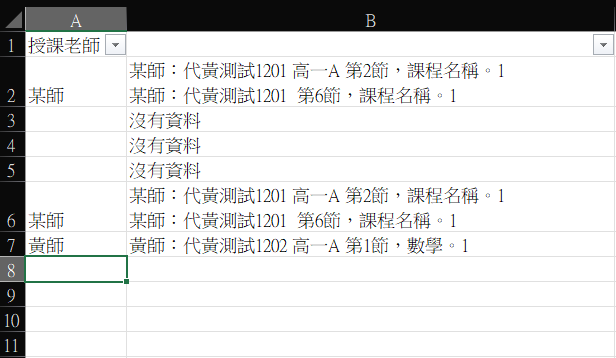
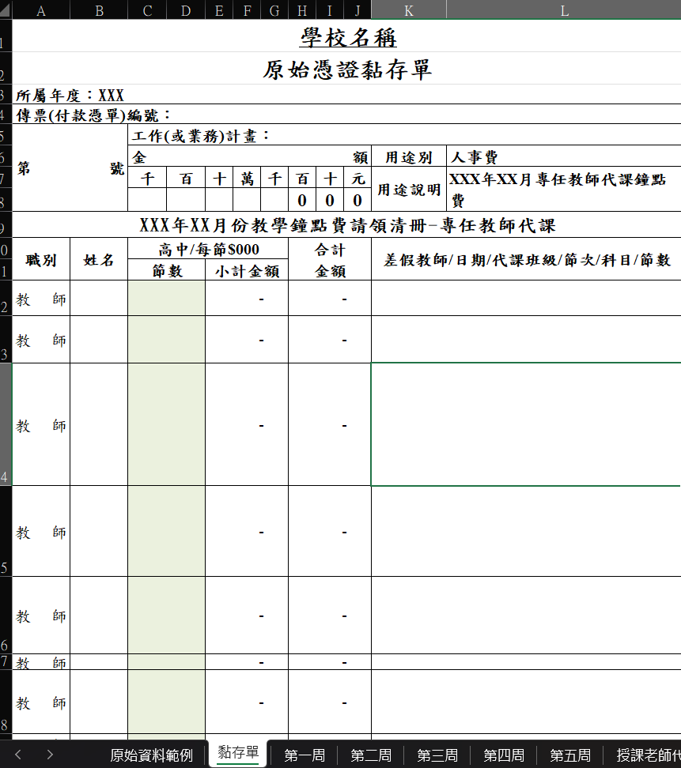
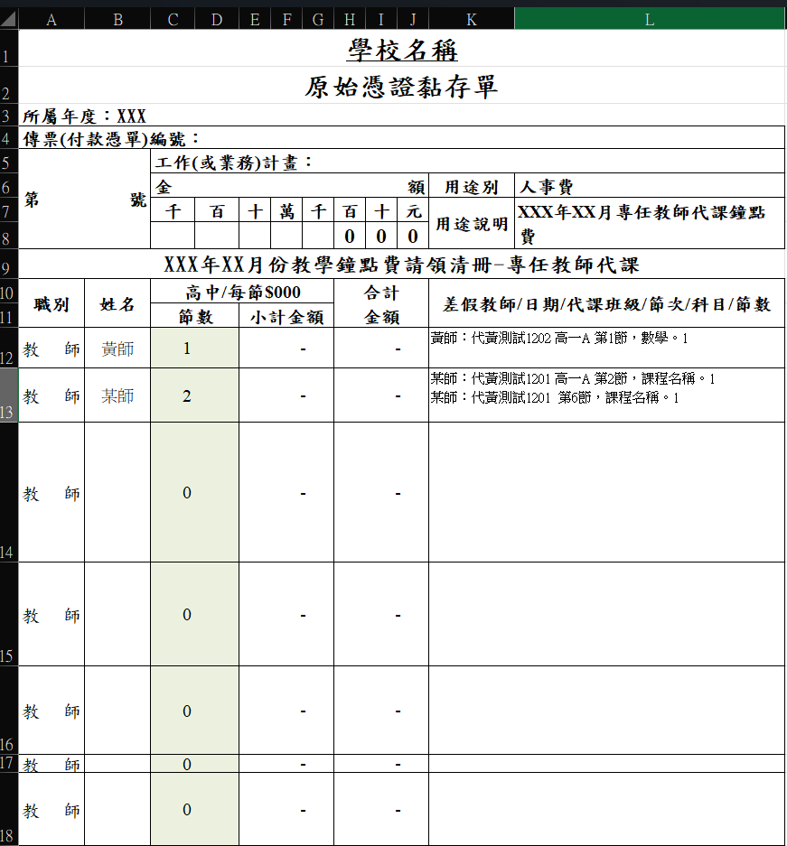

01
WEEKLY DATA
代課資料原本分散在每週表單中
每週表單會記錄實際代課狀況， 包含日期、節次、班級、科目， 以及由哪位教師代課。
若要整理整個月的鐘點費請領資料， 原本需要再從各週內容中逐筆查找與整理， 因此將這些固定格式的資料交由 VBA 統一掃描。

畫面中的鐘點費以 000 元顯示， 是因為此版本已將實際金額清除作為展示用資料； 實際使用時會依當期鐘點費標準調整， 並已提供對應的修改方式。
02
MONTHLY SUMMARY
依授課老師名單，自動掃描第一至第五週
先將授課老師建立在固定名單中， 程式再依名單逐一掃描第一至第五週， 找出包含該教師的代課紀錄。
符合條件的資料會自動整理出日期、 代課班級、節次與科目， 再集中成該教師整個月的代課明細； 當月沒有代課紀錄時， 則顯示沒有資料。


DATA HANDLING
同名教師重複出現在搜尋名單時
授課老師名單會逐列進行查找， 因此同一位教師若重複登錄， 彙整畫面仍可能出現重複結果。
後續黏存單則依教師姓名取得對應資料， 不會因為搜尋名單中同名教師重複出現， 就將同一筆請領內容重複計算。
03
VOUCHER
輸入教師姓名，帶入整月代課明細與節數
整月代課資料彙整完成後， 在原始憑證黏存單的姓名欄輸入教師姓名， 表格即可取得該教師的整月代課紀錄。
右側會帶入代課教師、日期、班級、 節次與科目等內容， 左側則依代課資料計算請領節數， 再配合鐘點費標準計算後續金額。


展示資料說明： 此版本已將實際鐘點費金額清除， 因此畫面以 000 元與 0 元顯示； 實際使用時會依當期鐘點費標準調整。
04
WORKFLOW
從每週紀錄到整月請領資料
記錄班級、科目
與代課教師
掃描第一至第五週
整理教師代課紀錄
依教師姓名帶入
黏存單與節數
05
RESULT
保留原本熟悉的表格，減少後續人工整理
原本每週代課資料以 Word 表格逐份填寫， 月底再由承辦人員逐筆整理整月代課內容， 填入請領所需的表格後列印送簽。
調整後將原有表格格式轉為 Excel， 盡量保留使用者原本熟悉的版面與作業方式， 再利用 VBA 自動處理整月資料查找與彙整， 減少重複輸入與人工整理。
保留熟悉版面
將原本使用的代課請示表格式轉為 Excel， 不需要使用者重新適應完全不同的表單。
自動彙整代課紀錄
程式掃描第一至第五週， 依教師整理日期、班級、節次與科目， 不必再逐份表格人工查找。
明細直接帶入
在黏存單輸入教師姓名後， 即可帶入對應的整月代課明細與節數， 再依鐘點費標準完成後續請領與列印送簽。
DEVELOPMENT
開發方式
依原有的每週代課表與請領流程整理資料關係、 搜尋規則與輸出方式， 建立授課老師名單作為搜尋基準， 並透過 VBA 掃描各週代課紀錄、 彙整整月資料，再帶入後續請領表格。
專案中的需求理解、資料整理、流程設計、 功能測試與實際使用調整由我負責； VBA 程式撰寫、技術查詢與除錯過程會搭配 AI 協助。